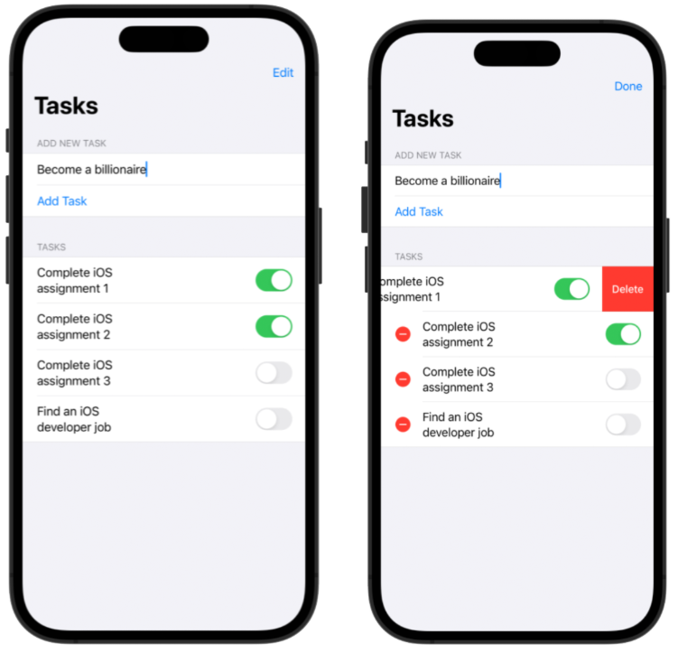
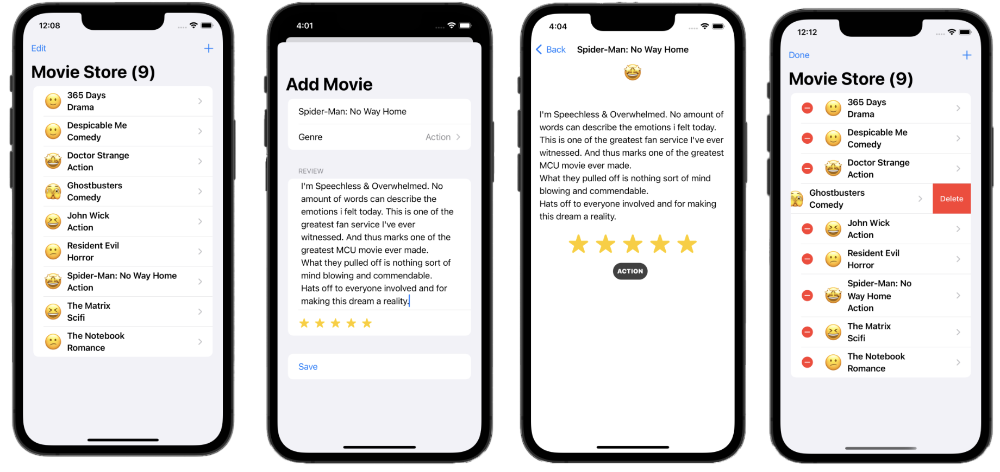

📜 A Brief History: From Core Data to SwiftData
🕰️ Understanding the Predecessor: Core Data
Before SwiftData, the primary solution for data persistence on Apple platforms was Core Data. For nearly two decades, it has been a powerful and robust framework for managing an app's model layer. Core Data is not a database itself but an object graph and persistence framework that can use SQLite as its persistent store.
Key Concepts of Core Data:
- Managed Object Model: A schema, typically defined in a visual editor (
.xcdatamodeldfile), that describes the entities (data models), attributes (properties), and relationships in your app. - Managed Object Context: An in-memory "scratchpad" where you create, fetch, and modify your data objects.
- Persistent Store Coordinator: A coordinator that saves and fetches data between the context and the actual database file.
- NSManagedObject: The base class for all Core Data objects. You would typically create subclasses of this to represent your app's data models.
Why Was a Change Needed?
While powerful, Core Data comes from an older, Objective-C era of development. For modern Swift and SwiftUI developers, it often felt verbose and complex. Common pain points included:
- Boilerplate Code: Setting up the Core Data stack required a significant amount of boilerplate code.
- Context Management: Manually managing the managed object context, especially across different threads, was a common source of bugs.
- Separate Model File: The data model was defined in a separate visual editor, disconnected from the Swift code that used it.
- Integration with SwiftUI: While possible, making Core Data work seamlessly with SwiftUI's reactive nature required custom wrappers and a deep understanding of both frameworks.
✨ The Evolution: Why SwiftData is Better
Apple introduced SwiftData to address these challenges directly. It provides a modern, Swift-native API that is built on top of the proven Core Data engine. Think of it as a beautiful, modern facade on a powerful, time-tested foundation.
SwiftData is better for modern development because it is:
- Code-First: Define your models directly in Swift with the
@Modelmacro, keeping your schema and code in one place. - Declarative: Designed from the ground up to work with SwiftUI's declarative syntax, using property wrappers like
@Queryto seamlessly link your data to your views. - Safe and Simple: It eliminates most of the boilerplate and complexity, especially around context management and threading, reducing common errors.
By learning SwiftData, you are using a framework that is not only easier to learn and use but also fully optimized for the future of Apple platform development.
Interested in Core Data?
For students who are still interested in understanding Core Data, a version of the To-Do List app implemented with Core Data can be found in this Github repo: https://github.com/TomHuynhSG/To-Do-List-Core-Data-iOS
Additionally, a Movie Store app using Core Data can be found here: https://github.com/TomHuynhSG/Movie-Store-Core-Data-iOS/tree/main
🚀 SwiftData: Your Comprehensive Guide to Modern Data Persistence in SwiftUI
SwiftData is a powerful, Swift-native framework introduced by Apple that revolutionizes data persistence in SwiftUI applications. Built upon the robust foundation of Core Data, SwiftData offers a more intuitive and streamlined API, allowing developers to manage and persist data with significantly less code and complexity. This guide will walk you through everything you need to know to master SwiftData, from its fundamental concepts to advanced techniques.
🎯 The Core Principles of SwiftData
At its heart, SwiftData is designed for seamless integration with the declarative nature of SwiftUI. It leverages modern Swift features like macros to make data persistence a natural extension of your app's logic. The key benefits of using SwiftData include:
- Declarative and Code-Based: Define your entire data model directly in Swift code, eliminating the need for external model files.
- Seamless SwiftUI Integration: SwiftData is built to work hand-in-hand with SwiftUI, providing property wrappers that automatically update your views when the underlying data changes.
- Simplified API: Compared to Core Data, SwiftData offers a more concise and easier-to-understand API for common data operations.
- Built on Core Data: It inherits the power and performance of Core Data's proven persistence architecture.
- Automatic iCloud Syncing: Effortlessly sync your app's data across multiple devices with CloudKit integration.
🛠️ Getting Started: The Core Components
To begin working with SwiftData, you'll need to familiarize yourself with its three main components:
- @Model: A macro that transforms a regular Swift class into a persistent data model that SwiftData can manage.
- ModelContainer: A container that manages the schema and persistence for your data models. You typically set this up once at the root of your application.
- ModelContext: An object that allows you to interact with your data. You use it to create, fetch, update, and delete your model objects.
📝 Defining Your Data Model with @Model
Creating a persistent model in SwiftData is as simple as adding the @Model macro to a class. This macro automatically handles the necessary transformations to make your class's properties persistable.
What does @Model do?
The @Model macro is a powerful feature of modern Swift. At compile time, it automatically rewrites your simple class to include all the necessary code for data persistence. This includes making properties trackable, handling database schema generation, and more, all without you having to write any boilerplate code.
import SwiftData
@Model
class Trip {
var name: String
var destination: String
var startDate: Date
var endDate: Date
init(name: String, destination: String, startDate: Date, endDate: Date) {
self.name = name
self.destination = destination
self.startDate = startDate
self.endDate = endDate
}
}Key Attributes and Relationships:
SwiftData provides additional macros to fine-tune your model's properties and define relationships between different models:
- @Attribute(.unique): Ensures that the value of a property is unique across all instances of that model.
- @Relationship: Defines how different models relate to each other, such as one-to-many or many-to-many relationships. You can also specify delete rules, like cascading deletes.
- @Transient: Marks a property to be excluded from the persistent storage.
Here's an example of a more complex model with a relationship:
import SwiftData
@Model
class BucketListItem {
var title: String
var hasBeenCompleted: Bool = false
var trip: Trip? // A to-one relationship to a Trip
init(title: String) {
self.title = title
}
}
@Model
class Trip {
@Attribute(.unique) var name: String
var destination: String
var startDate: Date
var endDate: Date
@Relationship(deleteRule: .cascade) var bucketList: [BucketListItem] = [] // A one-to-many relationship
init(name: String, destination: String, startDate: Date, endDate: Date) {
self.name = name
self.destination = destination
self.startDate = startDate
self.endDate = endDate
}
}In this example, deleting a Trip will also delete all of its associated BucketListItem objects due to the .cascade delete rule.
📦 Setting Up the ModelContainer
To make your SwiftData models available to your application, you need to configure a ModelContainer. This is typically done in your app's main entry point using the .modelContainer(for:) view modifier.
What is a ModelContainer?
Think of the ModelContainer as the digital filing cabinet for your app's data. When you call .modelContainer(for:), you are setting up this entire cabinet. SwiftData handles everything behind the scenes: it builds the cabinet (the underlying SQLite database), creates labeled folders based on your @Model classes (the schema), and gets it ready for you to start storing and retrieving files (your data).
import SwiftUI
import SwiftData
@main
struct YourAppNameApp: App {
var body: some Scene {
WindowGroup {
ContentView()
}
.modelContainer(for: [Trip.self, BucketListItem.self])
}
}🔄 Performing CRUD Operations with ModelContext
The ModelContext is your primary tool for interacting with your data. You can access it within any SwiftUI view using the @Environment property wrapper.
Think of ModelContext as a Scratchpad
The ModelContext is your in-memory "workspace" or "scratchpad." When you create, delete, or change an object, you're not writing directly to the database file on disk. Instead, you're making these changes on this temporary scratchpad. This is incredibly fast and efficient. SwiftData then intelligently saves these changes from the scratchpad to the permanent database at the right time, like when your app closes or moves to the background, ensuring your data is safe without slowing down the user experience.
import SwiftUI
import SwiftData
struct ContentView: View {
@Environment(\.modelContext) private var modelContext
// ... your view body
}Here's how to perform the fundamental CRUD (Create, Read, Update, Delete) operations:
- Create (Insert): To create a new object, you initialize your model and then insert it into the
modelContext.func addTrip() { let newTrip = Trip(name: "Summer Vacation", destination: "Hawaii", startDate: Date(), endDate: Date().addingTimeInterval(86400 * 7)) modelContext.insert(newTrip) } - Read (Fetch): The primary way to fetch and display data in SwiftUI is with the
@Queryproperty wrapper, which we'll cover in the next section. - Update: To update an existing object, you simply modify its properties. SwiftData automatically tracks these changes.
func updateTrip(trip: Trip) { trip.destination = "Maui" } - Delete: To delete an object, you pass it to the
delete()method of themodelContext.func deleteTrip(trip: Trip) { modelContext.delete(trip) }
🔍 Displaying and Filtering Data with @Query
The @Query property wrapper is the magic that connects your SwiftData models to your SwiftUI views. It fetches data and automatically updates your view whenever the data changes, without any need for manual refresh logic.
The Declarative Bridge
@Query is the declarative bridge between your data and your UI. Think of it as a live news feed for your data. You don't tell it *how* to fetch the data or *when* to refresh. You simply declare *what* data you want (e.g., "all trips, sorted by start date"). SwiftData and SwiftUI handle the rest, ensuring your UI is always a direct reflection of your data's current state. This is a core principle of SwiftUI.
Here's a simple example of how to display a list of trips:
import SwiftUI
import SwiftData
struct TripListView: View {
@Query(sort: \.startDate, order: .reverse) var trips: [Trip]
var body: some View {
List(trips) { trip in
VStack(alignment: .leading) {
Text(trip.name).font(.headline)
Text(trip.destination)
}
}
}
}Filtering and Sorting with Predicates:
@Query is highly configurable. You can easily sort and filter your data using its parameters:
- sort: Specifies the key path to sort by.
- order: Determines the sort order (
.forwardor.reverse). - predicate: A powerful way to filter your data based on specific criteria using the
#Predicatemacro.
Here's how you would fetch only upcoming trips:
@Query(filter: #Predicate<Trip> { $0.startDate > Date() }, sort: \.startDate) var upcomingTrips: [Trip]Deeper Dive into #Predicate
The #Predicate macro is like a powerful search filter or "sieve" for your data. It lets you be very specific about what you want to show. You can build complex queries by combining conditions.
Filtering by Text: Find all trips whose destination contains the letter "a".
#Predicate<Trip> { $0.destination.contains("a") }Combining Conditions (AND): Find all trips to Hawaii that have already started.
#Predicate<Trip> { $0.destination == "Hawaii" && $0.startDate < Date() }Combining Conditions (OR): Find all trips that are either to Hawaii OR to Maui.
#Predicate<Trip> { $0.destination == "Hawaii" || $0.destination == "Maui" }🔗 Defining Model Relationships
Establishing relationships between your data models is a fundamental aspect of building robust applications. SwiftData, while simplifying many aspects of data persistence, provides powerful and explicit ways to define how your models connect to each other. Let's dive into one-to-one, one-to-many, and many-to-many relationships with clear examples.
🔑 The @Relationship Macro: Your Key to Connections
The primary tool you'll use to define and customize relationships in SwiftData is the @Relationship macro. While SwiftData can often infer simple relationships, using this macro gives you explicit control over crucial aspects like:
- Inverse Relationships: Defining the "other side" of the connection, which is essential for data integrity and proper updates.
- Delete Rules: Specifying what happens to related objects when an object is deleted.
Why are Inverse Relationships Important?
Think of an inverse relationship as a "two-way street." If you only define the connection from one side (e.g., a Customer has an array of Orders), SwiftData doesn't automatically know that an Order belongs to that Customer. By defining the inverse (linking Order.customer back to Customer.orders), you complete the circuit. This allows SwiftData to maintain the integrity of your data. Now, when you add an order to a customer's array, SwiftData automatically sets the order's customer property, keeping both sides perfectly in sync without any extra work from you.
🤝 One-to-One Relationships
A one-to-one relationship exists when one instance of a model is related to exactly one instance of another model. Think of a Person and their Profile. A person has one profile, and that profile belongs to only one person.
Key Implementation Points:
- Each model has a property that holds an optional reference to the other.
- It's best practice to make both sides of the relationship optional. This avoids a "chicken-and-egg" problem where you can't create one object without first creating the other.
Example: Employee and Computer
Let's model a scenario where each employee is assigned exactly one computer.
import SwiftData
@Model
class Employee {
var name: String
// The inverse tells SwiftData that this is connected to the 'employee' property in the Computer class
@Relationship(inverse: \Computer.employee)
var computer: Computer?
init(name: String) {
self.name = name
}
}
@Model
class Computer {
var modelName: String
var employee: Employee? // The other side of the one-to-one relationship
init(modelName: String) {
self.modelName = modelName
}
}How it works:
- The
Employeeclass has an optionalcomputerproperty. - The
Computerclass has an optionalemployeeproperty. - The
@Relationship(inverse: \Computer.employee)on thecomputerproperty explicitly tells SwiftData that these two properties are linked. This ensures that if you assign a computer to an employee, the employee is also automatically linked back to that computer.
👨👩👧👦 One-to-Many Relationships
This is one of the most common relationships. It exists when one instance of a model can be related to many instances of another, but each of those instances is related to only one of the first. A classic example is a Folder that can contain many Notes, but each Note belongs to only one Folder.
Key Implementation Points:
- The "one" side of the relationship has an array of the "many" side.
- The "many" side has a single, optional property for the "one" side.
- You must define the inverse relationship to ensure data consistency.
Example: Customer and Order
A customer can have multiple orders, but each order belongs to a single customer.
import SwiftData
@Model
class Customer {
var name: String
// A customer can have many orders. The delete rule .cascade means if a customer is deleted, all their orders are also deleted.
@Relationship(deleteRule: .cascade, inverse: \Order.customer)
var orders: [Order] = []
init(name: String) {
self.name = name
}
}
@Model
class Order {
var orderNumber: Int
var orderDate: Date
var customer: Customer? // An order belongs to one customer
init(orderNumber: Int, orderDate: Date) {
self.orderNumber = orderNumber
self.orderDate = orderDate
}
}How it works:
- The
Customermodel has anordersarray to hold multipleOrderobjects. - The
Ordermodel has an optionalcustomerproperty. - The
@Relationshipmacro onordersspecifies two important things:deleteRule: .cascade: This is the most common rule for one-to-many relationships. It means, "If you delete the 'one' (theCustomer), automatically delete all of the 'many' (all theirOrders)." This is great for preventing orphaned data that no longer has a parent.- Other Delete Rules:
.nullify: This is the default. If you delete theCustomer, thecustomerproperty on all theirOrders is simply set tonil. The orders themselves are not deleted..deny: This rule prevents you from deleting aCustomerif they still have anyOrders associated with them. It's a protective measure to ensure you don't accidentally delete a parent object that still has children.
inverse: \Order.customer: This explicitly linksCustomer.orderswithOrder.customer. When you append an order to a customer'sordersarray, SwiftData will automatically set thecustomerproperty on thatOrderinstance.
📚 Many-to-Many Relationships
A many-to-many relationship exists when one instance of a model can be related to many instances of another, and vice-versa. For example, a Student can enroll in many Courses, and a Course can have many Students.
Key Implementation Points:
- Both models will have an array property to hold references to the other model.
- You must be explicit and use the
@Relationshipmacro to define the inverse relationship on at least one side. SwiftData will not infer many-to-many relationships automatically.
Example: Book and Author
A book can be written by multiple authors, and an author can write multiple books.
import SwiftData
@Model
class Book {
var title: String
var authors: [Author] = []
init(title: String) {
self.title = title
}
}
@Model
class Author {
var name: String
// We must be explicit with the inverse for many-to-many relationships.
@Relationship(inverse: \Book.authors)
var books: [Book] = []
init(name: String) {
self.name = name
}
}How it works:
- The
Bookmodel has anauthorsarray. - The
Authormodel has abooksarray. - The
@Relationship(inverse: \Book.authors)on thebooksproperty is crucial. It tells SwiftData that these two arrays are linked. Without this, SwiftData would likely interpret them as two separate one-to-many relationships, leading to incorrect behavior.
By mastering these relationship patterns, you can accurately model complex data structures in your SwiftUI applications, ensuring your data remains consistent, manageable, and easy to work with.
🏆 Challenge: Building a To-Do List App with SwiftData
Let's build a simple yet powerful to-do list application from scratch. This guide is designed for beginners, with detailed explanations for each step.
Our app will allow users to:
- Create different Projects (e.g., "House Chores", "Work Deadlines").
- Add To-Do Items to each project.
- Create and assign Tags (e.g., "Urgent", "Quick Task") to any to-do item.
This structure will allow us to implement both a one-to-many relationship (one Project has many To-Do Items) and a many-to-many relationship (one To-Do Item can have many Tags, and one Tag can be on many To-Do Items).
Step 1: 🏗️ Create a New Xcode Project
First, let's set up the project correctly.
- Open Xcode and select "Create a new Xcode project".
- Choose the iOS platform and the "App" template.
- Name your project something like
SwiftDataTodo. - For the "Storage" option, make sure you select "SwiftData". This is crucial as Xcode will automatically set up the basic configuration for us.
- Save the project on your computer.

Xcode will generate a project with some sample code. We will modify and build upon this.
Step 2: 🧱 Define Your Data Models
This is where we create the blueprints for our data. We'll create three models: Project, TodoItem, and Tag.
- Right-click on your project folder in the Xcode navigator and choose "New File".
- Select "Swift File" and name it
Project.swift. - Replace the contents of the file with the following code:
Beginner's Explanation:// Project.swift import Foundation import SwiftData @Model final class Project { var name: String var creationDate: Date // One-to-Many Relationship: A project can have many items. // deleteRule: .cascade means if a project is deleted, all its items are also deleted. // inverse: tells SwiftData how this is connected to the TodoItem model. @Relationship(deleteRule: .cascade, inverse: \TodoItem.project) var items: [TodoItem] = [] init(name: String, creationDate: Date) { self.name = name self.creationDate = creationDate } }@Model: This macro transforms our simple Swift class into a powerful data model that SwiftData can save, fetch, and manage.@Relationship(deleteRule: .cascade, inverse: \TodoItem.project): This is how we define the one-to-many relationship.deleteRule: .cascade: This is a safety feature. It means "If I delete a project, automatically delete all the to-do items inside it." This prevents orphaned data.inverse: \TodoItem.project: This is essential for data integrity. It creates a two-way link, telling SwiftData that thisitemsarray is directly connected to theprojectproperty that we are about to create in theTodoItemmodel.
- Create another new Swift file named
TodoItem.swift. Add this code:// TodoItem.swift import Foundation import SwiftData @Model final class TodoItem { var title: String var timestamp: Date var isCompleted: Bool // The "one" side of the one-to-many relationship. var project: Project? // Many-to-Many Relationship: An item can have many tags. var tags: [Tag] = [] init(title: String, timestamp: Date, isCompleted: Bool) { self.title = title self.timestamp = timestamp self.isCompleted = isCompleted } } - Finally, create a third Swift file named
Tag.swift. Add this code:
Beginner's Explanation:// Tag.swift import Foundation import SwiftData @Model final class Tag { // .unique ensures that we can't create two tags with the exact same name. @Attribute(.unique) var name: String // Many-to-Many Relationship: A tag can be applied to many items. // We must specify the inverse to complete the link with TodoItem. @Relationship(inverse: \TodoItem.tags) var items: [TodoItem] = [] init(name: String) { self.name = name } }@Attribute(.unique): This is a powerful data integrity rule. It tells SwiftData that thenameproperty of aTagmust be unique across all tags. If you try to create a new tag with a name that already exists, SwiftData will prevent a duplicate from being made, which is perfect for this use case.@Relationship(inverse: \TodoItem.tags): This is the crucial second half of our many-to-many relationship. It explicitly tells SwiftData that theitemsarray in thisTagmodel is the other side of the coin to thetagsarray in theTodoItemmodel. This two-way link is what makes the many-to-many relationship work correctly.
Step 3: ⚙️ Configure the Main App File
Now we need to tell our app about all the new models we just created.
- Open the file named
SwiftDataTodoApp.swift(or whatever you named your project). - Find the
.modelContainermodifier. Xcode likely created it with justItem.selfinside. - Update it to include all three of our models:
Project,TodoItem, andTag.
Beginner's Explanation: Theimport SwiftUI import SwiftData @main struct SwiftDataTodoApp: App { var sharedModelContainer: ModelContainer = { // Define the schema (the blueprints) for our data let schema = Schema([ Project.self, TodoItem.self, Tag.self, ]) let modelConfiguration = ModelConfiguration(schema: schema, isStoredInMemoryOnly: false) do { return try ModelContainer(for: schema, configurations: [modelConfiguration]) } catch { fatalError("Could not create ModelContainer: \(error)") } }() var body: some Scene { WindowGroup { ProjectListView() // We will create this view next } .modelContainer(sharedModelContainer) // This makes the database available to all our views } }.modelContainer(...)is like plugging in a hard drive for your app. By listing our models in theSchema, we are telling SwiftData what kind of data to expect so it can prepare the database accordingly. This container is then made available to all child views.
Step 4: 📋 Build the Project List View
This will be the main screen of our app, showing a list of all projects.
- Delete the default
ContentView.swiftfile. - Create a new SwiftUI View file and name it
ProjectListView.swift. - Add the following code:
Beginner's Explanation:// ProjectListView.swift import SwiftUI import SwiftData struct ProjectListView: View { // The modelContext is our "workspace" for adding, editing, and deleting data. @Environment(\.modelContext) private var modelContext // @Query is a magic property wrapper that fetches data and automatically updates the view when the data changes. @Query(sort: \Project.creationDate, order: .reverse) private var projects: [Project] // A temporary state variable to hold the name of the new project before it's created. @State private var newProjectName = "" var body: some View { NavigationStack { VStack { List { // Loop through each project fetched by the @Query. ForEach(projects) { project in // Each project is a link that takes the user to its specific to-do list. NavigationLink(destination: TodoListView(project: project)) { Text(project.name) } } // Enable the swipe-to-delete functionality on the list. .onDelete(perform: deleteProjects) } // A simple form at the bottom to add a new project. HStack { TextField("New Project Name", text: $newProjectName) .textFieldStyle(.roundedBorder) Button("Add", action: addProject) // The button is disabled if the text field is empty to prevent creating blank projects. .disabled(newProjectName.isEmpty) } .padding() } .navigationTitle("Projects") } } // This function is called when the "Add" button is tapped. private func addProject() { // Create a new Project instance with the current name and date. let newProject = Project(name: newProjectName, creationDate: .now) // Insert the new project into the modelContext to save it. modelContext.insert(newProject) // Clear the text field for the next entry. newProjectName = "" } // This function is called when a user swipes to delete a row. private func deleteProjects(offsets: IndexSet) { // Loop through all the indices of the items to be deleted. for index in offsets { let projectToDelete = projects[index] // Tell the modelContext to delete the specified project. modelContext.delete(projectToDelete) } } } #Preview { ProjectListView() // This sets up a temporary, in-memory database just for this preview. .modelContainer(for: Project.self, inMemory: true) }@Environment(\.modelContext): This gives us access to the "workspace" that SwiftData provides. We need it toinsertanddeleteobjects.@Query(...): This is the core of SwiftData in SwiftUI. It fetches allProjectobjects from the database, sorts them by creation date, and displays them. If you add or delete a project,@Queryautomatically detects the change and refreshes the list on screen.modelContext.insert(): This is how you save a new object. You create it, then insert it into the context. SwiftData handles the rest.modelContext.delete(): This is how you delete an object. You find the object you want to remove and tell the context to delete it.
Step 5: ✅ Build the To-Do List View
This view will show the to-do items for a specific project.
- Create a new SwiftUI View file named
TodoListView.swift. - Add the following code:
Beginner's Explanation:// TodoListView.swift import SwiftUI import SwiftData struct TodoListView: View { // We receive the project from the previous view, so this view knows which project's items to show. let project: Project @Environment(\.modelContext) private var modelContext // A temporary state variable for the new to-do item's title. @State private var newTodoTitle = "" var body: some View { VStack { List { // We loop directly over the 'items' array of the passed-in project. ForEach(project.items) { item in HStack { // This button toggles the completion status of the to-do item. Button(action: { item.isCompleted.toggle() }) { Image(systemName: item.isCompleted ? "checkmark.circle.fill" : "circle") } Text(item.title) } } .onDelete(perform: deleteItems) } // Form to add a new to-do item to the current project. HStack { TextField("New To-Do Item", text: $newTodoTitle) .textFieldStyle(.roundedBorder) Button("Add", action: addTodoItem) .disabled(newTodoTitle.isEmpty) } .padding() } .navigationTitle(project.name) } private func addTodoItem() { let newItem = TodoItem(title: newTodoTitle, timestamp: .now, isCompleted: false) // IMPORTANT: By appending the item to the project's list, // the inverse relationship automatically links the item back to this project. SwiftData saves it for us. project.items.append(newItem) newTodoTitle = "" } private func deleteItems(offsets: IndexSet) { for index in offsets { let itemToDelete = project.items[index] modelContext.delete(itemToDelete) } } }let project: Project: This view doesn't fetch all projects with@Query. Instead, it's given one specificProjectto work with, passed in from theProjectListViewwhen the user taps a navigation link.ForEach(project.items): We simply loop over theitemsarray that belongs to the specificprojectwe were given. Because of SwiftData's reactive nature, this list will automatically update on screen whenever you add or remove items from this array.project.items.append(newItem): This is a key concept. Notice we are not usingmodelContext.insert()here. Because we defined the inverse relationship betweenProjectandTodoItem, SwiftData is smart enough to know that adding a new item to a project'sitemsarray means that the new item should be inserted into the database and automatically linked to that project. This is often more intuitive than usinginsert()for child objects.
Step 6: 🏷️ Build the Tag Management View
This final piece will handle the many-to-many relationship. We'll create a view to create and assign tags.
- Create a new SwiftUI View file named
ManageTagsView.swift. - Add the following code:
// ManageTagsView.swift import SwiftUI import SwiftData struct ManageTagsView: View { // The specific to-do item we are tagging, passed from the previous view. let todoItem: TodoItem // Fetch all available tags from the database to display them as options. @Query(sort: \Tag.name) private var allTags: [Tag] @Environment(\.modelContext) private var modelContext @State private var newTagName = "" var body: some View { VStack { List { Section("Tap to Add/Remove") { ForEach(allTags) { tag in Button(action: { toggle(tag: tag) }) { HStack { Text(tag.name) Spacer() // Show a checkmark if the item already has this tag. if todoItem.tags.contains(where: { $0.id == tag.id }) { Image(systemName: "checkmark") } } } .buttonStyle(.plain) // Use plain style to make the whole row tappable. } } } // Form to create a new tag available for all items. HStack { TextField("New Tag Name", text: $newTagName) .textFieldStyle(.roundedBorder) Button("Create Tag", action: createTag) .disabled(newTagName.isEmpty) } .padding() } .navigationTitle("Manage Tags") } private func createTag() { let newTag = Tag(name: newTagName) modelContext.insert(newTag) newTagName = "" } private func toggle(tag: Tag) { // Check if the item already has the tag. if let index = todoItem.tags.firstIndex(where: { $0.id == tag.id }) { // If it does, remove it. todoItem.tags.remove(at: index) } else { // If it doesn't, add it. todoItem.tags.append(tag) } } } - Final Touch: Now, let's add a way to get to this new tag management screen. Go back to
TodoListView.swiftand modify theForEachloop to include aNavigationLinkand display the tags.// Inside TodoListView.swift's body List { ForEach(project.items) { item in NavigationLink(destination: ManageTagsView(todoItem: item)) { HStack { Image(systemName: item.isCompleted ? "checkmark.circle.fill" : "circle") .onTapGesture { // Make the checkmark tappable directly in the list. item.isCompleted.toggle() } VStack(alignment: .leading) { Text(item.title) // Display the tags for this item if any exist. if !item.tags.isEmpty { HStack { // Sort the tags alphabetically for a consistent order. ForEach(item.tags.sorted(by: { $0.name < $1.name })) { tag in Text(tag.name) .font(.caption) .padding(4) .background(Color.gray.opacity(0.2)) .cornerRadius(5) } } } } } } } .onDelete(perform: deleteItems) }
You now have a fully functional to-do list app! Run it in the simulator. You can create projects, add to-do items to them, create tags, and assign those tags to your items, demonstrating all three types of data relationships in a practical way.
Step 7: 🧪 Test Your Application
Now it's time to test the app. You can either compile and deploy it to a simulator/physical device or use the interactive preview in the ProjectListView.
- Create a Project: Use the text field at the bottom to type a name like "Test a few things" and tap "Add".
- Go to the To-Do List: Tap on the project you just created ("Test a few things"). This will navigate you to the
TodoListView. - Go to the Tag Management Screen: Now that you have a to-do item, tap on the item itself (the row that says "Learn SwiftData"). This will navigate you to the
ManageTagsViewfor that specific item. - Create and Assign a Tag: You are now on the "Manage Tags" screen.
- Create a New Tag: Use the text field at the bottom to type a tag name (e.g., "Urgent") and tap "Create Tag".
- Assign the Tag: The new tag will appear in the list above. Tap on the "Urgent" row. A checkmark will appear, and the tag is now assigned to your "Learn SwiftData" to-do item. You can tap it again to un-assign it.
- When you navigate back to the to-do list, you will see the "Urgent" tag displayed neatly under your to-do item.
💡 Common Pitfalls & Best Practices
As you begin your journey with SwiftData, you might encounter a few common stumbling blocks. This section highlights these potential issues and provides best practices to help you write cleaner, more efficient, and bug-free code.
🤔 Why does my data disappear when the preview refreshes?
This is one of the most common points of confusion for beginners, but it's actually a feature, not a bug!
The Short Answer: The preview is specifically configured to use a temporary, in-memory database. When the preview refreshes, that temporary database is wiped clean and a new, empty one is created.
The Detailed Explanation:
Look at the #Preview block at the bottom of your ProjectListView.swift file:
#Preview {
ProjectListView()
.modelContainer(for: Project.self, inMemory: true) // <-- This is the key part
}The inMemory: true parameter tells SwiftData: "For this preview only, don't save anything to the phone's permanent storage. Just create a temporary database that exists only in the device's RAM."
Think of it like this:
- The Simulator/Real Device: This is like writing in a notebook with a pen. When you add a project, it's written down permanently. You can close the app and come back, and your notes will still be there. This is what happens when you set
isStoredInMemoryOnly: falsein your main app file. - The SwiftUI Preview: This is like writing on a whiteboard with a dry-erase marker. You can add projects and tasks, but as soon as the "meeting" is over (the preview refreshes), the board is wiped clean for the next session. This is what
inMemory: truedoes.
This behavior is intentional and very useful because it ensures your previews are always in a clean, predictable state and don't get cluttered with test data.
To see your data persist, you must run the app in the Simulator or on a real device. Click the "Play" button at the top of Xcode to build and run the app. Any data you add there will be saved permanently.
Understanding `insert()` vs. `.append()`
When adding new objects, especially in a relationship, it can be confusing whether to use modelContext.insert() or append to an array (like project.items.append()). Here’s a simple rule of thumb:
- Use
modelContext.insert(newObject)for parent or independent objects. When you create a brand newProjector aTagthat doesn't belong to anything yet, you should insert it directly into the context. - Use
parent.children.append(newChild)for child objects in a relationship. When you create aTodoItemthat belongs to a specificProject, appending it to the project'sitemsarray is more intuitive. Because you defined the inverse relationship, SwiftData is smart enough to know that this also means the new item should be inserted into the database.
Both methods will correctly save the data, but following this convention makes your code's intent clearer.
Always Define Inverse Relationships
While SwiftData can sometimes infer relationships, it's a strong best practice to always define the inverse relationship explicitly using @Relationship(inverse: ...). Forgetting this is a common source of bugs.
Why? Without the inverse, SwiftData might not know that two properties are linked. This can lead to data inconsistency, where updating one side of the relationship doesn't correctly update the other. For many-to-many relationships, the inverse is not just a best practice—it's required.
Simple Model Changes are (Usually) Handled Automatically
Beginners often worry about changing their @Model classes after they've already run the app and saved data. The good news is that SwiftData handles many simple changes automatically. This is called a lightweight migration.
You can safely make changes like:
- Adding a new property.
- Removing a property.
- Making a non-optional property optional (e.g.,
StringtoString?).
SwiftData will update the database schema for you the next time you run the app. For more complex changes (like renaming a property or changing its type), you'll need to learn about more advanced migration techniques, but for most day-to-day development, SwiftData makes evolving your data model painless.
🗺️ What's Next? Advancing Your SwiftData Skills
Congratulations on building a complete app with SwiftData! You've mastered the fundamentals of creating models, defining relationships, and connecting your data to a SwiftUI interface. Now that you have a solid foundation, here are some more advanced topics you can explore to become a SwiftData expert.
☁️ iCloud and CloudKit Sync
One of the most powerful features of SwiftData is its incredibly simple integration with iCloud. With just a few lines of configuration, you can enable your app's data to automatically and seamlessly sync across all of a user's devices. This is perfect for apps where users expect their data to be available on their iPhone, iPad, and Mac.
To get started, you'll need to add the "iCloud" capability in your Xcode project settings and then configure your ModelContainer to use a CloudKit container.
🗂️ Custom Configurations and Data Stores
Sometimes you need more control over where and how your data is stored. SwiftData allows you to create custom ModelConfiguration objects. This lets you:
- Store data in specific locations, such as a shared App Group container, so that your main app and its widgets or extensions can access the same data.
- Create multiple databases within the same app, perhaps to separate user data from cached data.
- Implement read-only stores, which can be useful for shipping your app with pre-loaded data that the user cannot modify.
🧪 Testing Your Data Layer
As your app grows, it becomes crucial to test your data logic. Because SwiftData can be configured to run entirely in-memory (as we saw in the SwiftUI Previews), it's very well-suited for unit testing. You can write tests that create a temporary in-memory database, perform a series of operations (add, update, delete), and then verify that your data logic behaves exactly as you expect, all without touching the user's real on-disk database.
🔄 Advanced Migrations
For complex changes to your data model—like renaming a property, changing a property's type (e.g., from String to Int), or splitting one model into two—SwiftData's automatic "lightweight" migration isn't enough. For these scenarios, you'll need to provide a MigrationPlan. This gives you fine-grained control to map data from the old version of your model to the new version, ensuring that your users never lose their data when they update your app.
By exploring these topics, you can build even more powerful, robust, and professional-grade applications with SwiftData.
📱 Example Projects with SwiftData
To see SwiftData in action, check out these example projects that have been converted from Core Data to SwiftData:
To-Do List App with SwiftData: https://github.com/TomHuynhSG/To-Do-List-Core-Data-iOS/tree/swiftdata
Movie Store App with SwiftData: https://github.com/TomHuynhSG/Movie-Store-Core-Data-iOS/tree/swiftdata
🧠 Final Challenge: Book Library App
Your Task
To test your understanding of SwiftData, your challenge is to build a simple "Book Library" application. This app will allow users to keep track of books they have read and the authors who wrote them.
Core Requirements:
- Book Model: Create a
Bookmodel with properties fortitle(String),author(String), andisRead(Bool). - Main View: Design a main view that displays a list of all the books in the library. Each item in the list should show the book's title and author.
- Add Book View: Create a separate view (perhaps presented as a sheet) that allows users to add a new book to the library by entering its title and author.
- Toggle Read Status: In the main list, allow users to tap on a book to toggle its
isReadstatus. You could show a checkmark or change the text color to indicate that a book has been read. - Delete Books: Implement a way for users to delete books from the library (e.g., using a swipe-to-delete gesture).
Bonus Challenge
If you want to take it a step further, try to refactor the app to have a separate Author model. Then, create a one-to-many relationship where one Author can have many Books. This will require you to update your UI to handle this new relationship, perhaps by allowing users to select an existing author or create a new one when adding a book.